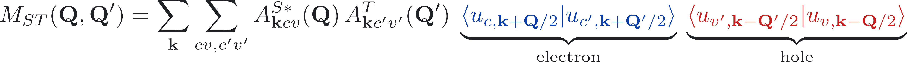
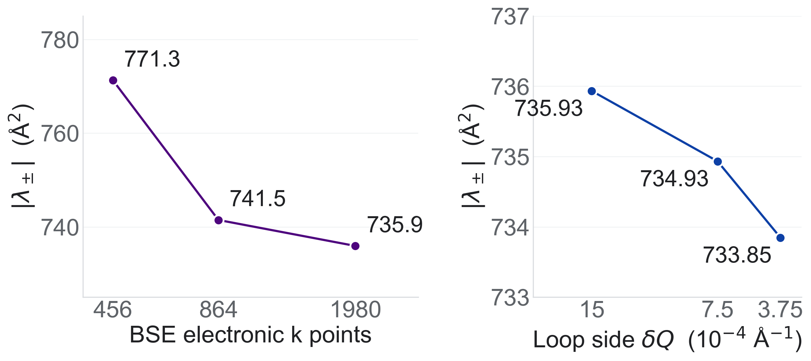
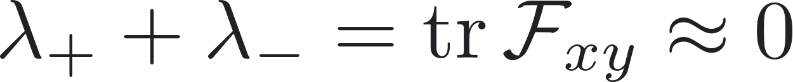
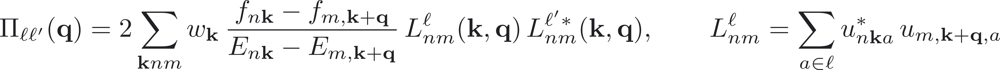
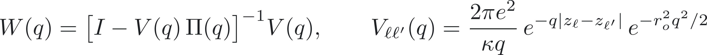
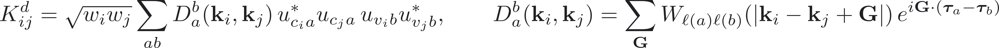
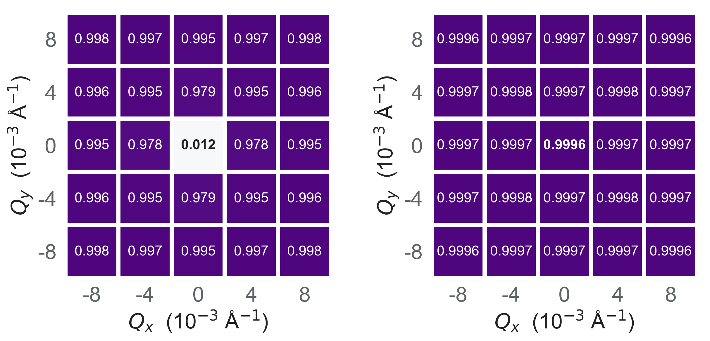
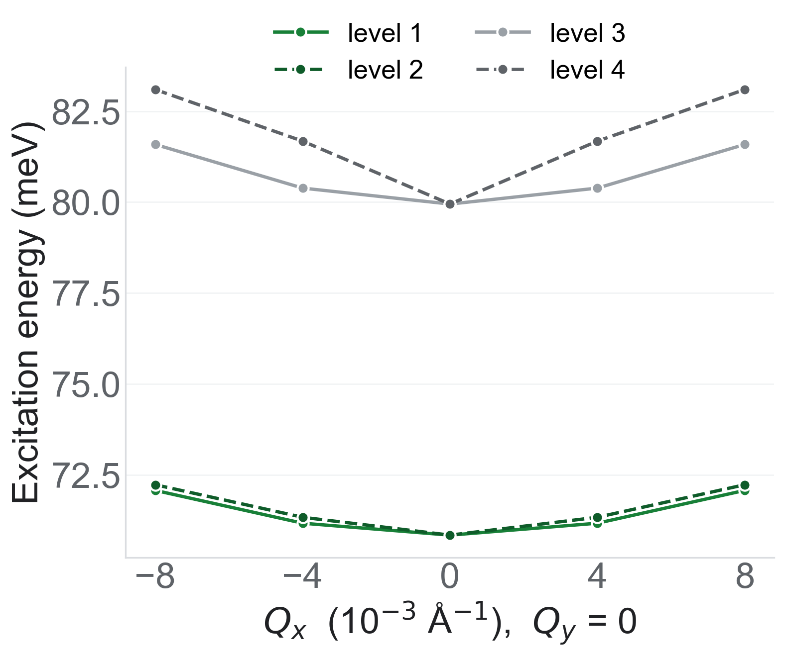
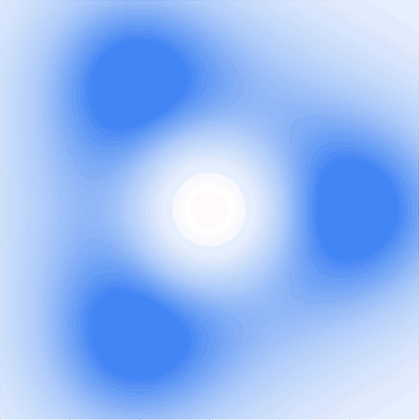
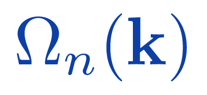

Research symposium
A Tale of Two ValleysThe Hidden Geometry of Excitons
Can we have topological excitons in biased bilayer graphene?
Exciton Berry curvature from a finite-momentum Bethe–Salpeter calculation
Sviatoslav Gladyshev
Supervisor: Dr. Marwa Mannai
Center for Quantum and Topological Systems, NYU Abu Dhabi · Ateno
[0:20] Title.
The title borrows from Dickens, A Tale of Two Cities: here the two valleys are K and K′, and the hidden geometry is the Berry curvature of the excitons, which, as we will see, comes out opposite in the two valleys.
The question of this talk is in blue: can we have topological excitons in biased bilayer graphene? By that I mean topology or quantum geometry of the exciton states themselves, as functions of the exciton's own centre-of-mass momentum Q, not the well-known topology of the electron bands.
Since the last version of this talk I have carried out the calculation: a finite-momentum Bethe–Salpeter calculation in a four-orbital lattice model, followed by a non-Abelian Berry-curvature calculation for the lowest exciton states. So today the second half of the talk presents actual model results.
Throughout I will keep four things apart: established electronic topology, published exciton physics, my own numerical model results, and what is still open. The work is supervised by Dr. Marwa Mannai at CQTS, NYU Abu Dhabi.
Bound.
An electron and a hole, held by Coulomb attraction. Approximately a boson at low density.
Neutral.
No net charge current, yet energy and information still move.
Geometric.
Their motion may depend on the geometry of the exciton band.
Hypothesis: if the composite has its own band geometry, an electric field could steer how it moves.
2
An exciton is an electron and a hole bound together, so it carries energy but no net charge. That makes it hard to steer with an ordinary voltage. Our hypothesis is that the geometry of the exciton band gives another handle on its motion, and that hypothesis is untested here.
Applications · 1 of 2
Excitons are already being routed and switched.
Working prototype
Bare excitons
Nanoengineered optoexcitonic switch
University of Michigan
Neutral excitons guided and gated in a nanoengineered device at room temperature.
Why it matters: neutral excitons can be routed and switched on a chip-scale structure.
Not: topological transport, and not bilayer graphene.
Jiang et al., ACS Nano 19, 32123 (2025)
Working prototype
Exciton-polaritons
Integrated polariton transistor
IBM Research Europe – Zurich, ETH Zürich, AMO & RWTH Aachen, Wuppertal
2 × 2 µm² device on silicon photonics: picosecond switching, amplification up to 60×, extinction up to 8:1.
Why it matters: exciton-based nonlinearity can be integrated with silicon photonics.
Not: bare excitons, and not explicitly topological.
Tassan et al., Light Sci. Appl. 15, 65 (2026) · arXiv
3
[1:30] Why should anyone care whether excitons have band geometry? Because excitons are already being used to carry and switch signals.
Left: the University of Michigan optoexcitonic switch. These are bare excitons: neutral electron–hole pairs that are guided and gated in a nanoengineered structure at room temperature. It is a working prototype. It is not topological and not bilayer graphene.
Right: the integrated polariton transistor from IBM Research Zurich and collaborators. This is a different particle: an exciton-polariton, an exciton strongly mixed with a cavity photon. The device switches in picoseconds with gain, on a silicon-photonics platform. Again a working prototype, but polaritonic, not topological.
Message: excitons carry energy and information without net charge. That makes them attractive for low-loss optoelectronics, but also hard to steer with a voltage. Band geometry is one candidate handle. None of these devices demonstrates topological exciton transport in biased bilayer graphene.
Applications · 2 of 2
Topology and geometry are entering exciton physics. In development
Exciton-polaritons
PolArt neuromorphic accelerator
EIC Pathfinder, 2024–2028, coordinated from the University of Warsaw
Aims to build hardware neural networks from polariton microcavities.
Why it matters: a funded effort is testing polaritons for computing hardware.
Not: a finished or commercial chip. It is a research project.
polart-project.eu · CORDIS 101130304
Experiment
Exciton-polaritons
Topological valley polaritons
Nanyang Technological University, Tsinghua University and collaborators
Valley-polarized kink states in a patterned perovskite lattice at room temperature, gap ≈ 9 meV.
Why it matters: topological protection and exciton-based states can coexist at room temperature.
Not: bare excitons, and not bilayer graphene.
Jin et al., Nat. Commun. 15, 10563 (2024)
Topologically enhanced exciton transport
Thompson et al.
Predicts that the quantum geometry of exciton bands can enhance exciton diffusion.
Why it matters: exciton band geometry is predicted to change how far excitons travel.
Not: an experiment, and not protected edge transport.
Thompson et al., Nat. Commun. 16, 11448 (2025)
4
[1:30] Three more examples, now closer to topology and geometry. The pills say what each one is: development project, experiment or theory; and which particle: polaritons or bare excitons.
PolArt is a European research project building neuromorphic hardware from polariton microcavities. It is in development, not a product.
The perovskite experiment of Jin et al. shows topological valley kink states of exciton-polaritons at room temperature, with a gap of about 9 meV. This is an experiment, but with polaritons, in a patterned photonic lattice, not with bare excitons in bilayer graphene.
Thompson et al. is a theory prediction for bare excitons: the quantum geometry of the exciton band can enhance diffusion. It is not an experiment and not protected edge transport.
Together: geometry and topology are becoming useful words for exciton and polariton transport. But none of these is a demonstration of topological exciton transport in biased AB bilayer graphene. That gap is what motivates our calculation: first find out whether the exciton states there have geometry at all.
Biased bilayer graphene · 1 · the Hamiltonian
Four orbitals and one gate-controlled bias. A₁ B₁ A₂ B₂ γ₀ γ₀ γ₁ γ₃ +U/2 −U/2 layer 1 layer 2 E field γ₀ = 3.0 eV, γ₁ = 0.40 eV, γ₃ = 0.30 eV, a = 2.46 Å. The perpendicular field enters only as the layer potential ±U/2.
Established model
Basis (A₁, B₁, A₂, B₂) · lattice form used for the whole Brillouin zone · Appendix A: continuum form and derivations
5
[1:15] The electronic starting point. AB bilayer graphene has four carbon sites per unit cell: A1 and B1 in the top layer, A2 and B2 in the bottom layer. B1 sits directly above A2, and that pair forms the strong vertical dimer bond γ1 = 0.4 eV. γ0 = 3 eV is the usual in-plane hopping, and γ3 = 0.3 eV is the skew hop between the two non-dimer sites, which causes trigonal warping.
A perpendicular electric field is represented by a layer potential: +U/2 on the top layer and −U/2 on the bottom layer. That is the only place the gate enters the model.
The matrix is written with the lattice structure factor g(k), the sum over the three nearest-neighbour vectors. This form is valid across the whole Brillouin zone, which the exciton calculation needs because the screening and exchange sums run over the entire zone, including both valleys K and K′. Near K, g is approximately −(√3a/2)(px − i py), and the matrix reduces exactly to the continuum Hamiltonian used in my earlier analytic work. The code checks this numerically to 10⁻¹¹ eV. The full continuum derivations are in Appendix A.
This is the established tight-binding model of McCann and Koshino; the parameter values are standard, not fitted to a device.
Biased bilayer graphene · 3 · electron topology
Electron Berry curvature and valley Chern numbers flip with the bias.
conduction
K
K′
U > 0
−1
+1
U < 0
+1
−1
Valleys cancel, so the total Chern number is zero; the valley difference is what reverses with the bias.
Author’s two-band model · U from +100 to −100 meV · blue Ω < 0, red Ω > 0 · Appendix A: Chern derivation
7
Established physics · derived here
[1:30] Electronic topology, which is established physics; I re-derived it as my starting point.
The Berry curvature Ω(k) of the conduction band acts like a magnetic field in momentum space. The animation shows it in both valleys as U sweeps from +100 to −100 meV: it is concentrated near the band edge, it has three lobes because of trigonal warping, it is opposite in K and K′ by time reversal, and it flips sign when the bias reverses.
Integrating it over one valley gives the valley Chern number. For the conduction band, C(K) = −sgn U and C(K′) = +sgn U (two-band model, Appendix A, which also shows that trigonal warping does not change the result). So the total Chern number is zero — there is no quantum anomalous Hall effect — but the valley difference is ±2 and reverses with the gate. This is the origin of valley Hall physics and of topological kink states at domain walls in bilayer graphene.
Important for what follows: these are properties of single electrons. They do not tell us the Berry curvature of an exciton as a function of its own momentum Q. That has to be computed separately, and that is what I did.
Schematic
The story, in one picture.
Schematic · illustrative · not a computed result · not to scale
8
Schematic
[0:45] This is my existing animation, unchanged: a cartoon, not a calculation.
Light creates an electron in the conduction band and leaves a hole in the valence band. Coulomb attraction binds them into an exciton, a neutral composite that moves as one object.
The picture draws the electron in the top layer and the hole in the bottom layer for clarity. In the real calculation each exciton state is a superposition of many electron–hole configurations, including both layers and both valleys.
The sideways bend at the end is the question we want to answer: does the exciton band have Berry curvature that could deflect it? The next slides set up how to compute that.
Excitons · what kind of particle?
A composite boson with its own momentum Q.
Bare exciton
Electron plus hole, bound by Coulomb attraction.
Approximately bosonic at low density, when pairs do not overlap. This talk is about these.
Exciton-polariton
Exciton strongly coupled to a confined photon.
Part light, part matter. It needs a cavity or similar structure, so its physics differs from a bare exciton.
Centre-of-mass momentum. Every pair in one exciton state shares the same total momentum.
Being bosonic does not imply condensation, topological order or fault-tolerant transport.
Established physics
9
[0:45] What kind of particle is an exciton? Two fermions bound together. At low density, when the pairs do not overlap, they behave approximately as bosons; at high density the fermionic constituents matter again.
A bare exciton is just the electron–hole pair; that is what this talk is about. An exciton-polariton additionally mixes in a cavity photon, so its dispersion, mass and lifetime are different. The device examples earlier were mostly polaritons.
The crucial new variable is Q, the centre-of-mass momentum of the pair. In my calculation I use the symmetric convention: the electron sits at k + Q/2 and the valence state is at k − Q/2, so the pair carries total momentum Q while k labels the relative motion. Each exciton state is a band E_S(Q), and exciton topology means Berry curvature and Chern numbers in Q, not in the electron momentum k.
Bosonic statistics alone gives none of condensation, topological order or protected transport.
Excitons · the finite-Q Bethe–Salpeter equation
From electron–hole pairs to exciton bands. A superposition of electron–hole pairs, all with total momentum Q.
Pair energies, minus screened attraction Kd , plus singlet exchange 2Kx .
Output: energies ES (Q) and weights AS (Q) . The geometry needs the weights and the electron Bloch states they multiply.
Exchange couples K and K′ excitons.
Established method
Appendix B: exciton mathematics · Appendix C: kernels and screening used here
10
[1:30] The method that turns electron bands into exciton bands.
First line: an exciton state at centre-of-mass momentum Q is a superposition of electron–hole pairs. c† creates an electron in conduction band c at k + Q/2; c removes an electron from valence band v at k − Q/2, which leaves the hole. The coefficients A are the exciton envelope in the space of pairs. In my calculation there are two conduction and two valence bands, so four transitions at every k, and k runs over the whole Brillouin zone, so both valleys are in the same matrix.
Second line: the Bethe–Salpeter equation in the Tamm–Dancoff approximation. The diagonal is the pair energy E_c(k+Q/2) − E_v(k−Q/2). K^d is the direct term: the screened Coulomb attraction between electron and hole, which binds them. K^x is the exchange term: the electron–hole pair annihilating and re-creating, which is repulsive; the factor 2 is for spin singlets. Exchange can transfer the pair between valleys, so it couples K and K′ excitons.
Output: exciton energies E_S(Q) — the exciton bands — and the weights A. A point to keep in mind: the coefficients A are defined relative to a choice of phase for each electronic Bloch state, so the geometry cannot be obtained from A alone. It needs A together with the Bloch states. I will come back to this in the results.
The structure is the standard one (see ABINIT and Sauer–Pedersen); the specific kernels are in Appendix C.
Excitons · published optics
Bright, dark, and a field-driven crossing.
240 mV/Å
Dark and bright excitons swap order. The crossing barely moves between suspended and hBN-encapsulated samples.
This work · model, U = 100 meV
Our lowest doublet is optically weak: ≈ 0.14 of the dipole strength of the brightest of the six lowest states (456-point check grid). No field sweep, so no crossing is claimed.
Figure: Sauer & Pedersen, Phys. Rev. B 105, 115416 (2022)
11
Published
[1:00] Bright and dark excitons; this is published work by Sauer and Pedersen (PRB 105, 115416), a DFT-based Bethe–Salpeter calculation for biased bilayer graphene.
Bright excitons couple to normally incident light; dark ones do not. In the rotationally symmetric picture the band pseudospin contributes angular momentum ∓2 in K and K′, so a 1s exciton has total angular momentum ±2 and is dark, while light needs ±1; trigonal warping relaxes this weakly (Appendix B).
Their figure shows the absorption spectrum at fields from 60 to 300 mV/Å. At low field the lowest exciton is mostly dark; near 240 mV/Å a bright state crosses below it. The crossing position is nearly the same for suspended and hBN-encapsulated samples. This is their result, not mine.
My own model gives one consistent data point, shown in the box: at U = 100 meV the lowest exciton doublet has only about 0.14 of the dipole strength of the brightest of the six lowest states, on a coarse 456-point check grid. I did not sweep the field, so I make no claim about where a crossing occurs in my model. Note also that their field in mV/Å and my U are not directly interchangeable because of screening.
Main results
Electron valley Chern numbers are established.
Can we have topological excitons in biased bilayer graphene?
We computed the Berry curvature of the exciton states themselves, over the exciton momentum Q.
[0:15] Here is the pivot. Electron valley Chern numbers in biased bilayer graphene are established physics. The research question is whether the excitons — the bound, neutral composites — have topology or quantum geometry of their own, in their own momentum Q.
The rest of the talk is my calculation. Six slides: the model, the exciton energies, the curvature result, why it has to be done in a non-Abelian way, the numerical checks, and what it does and does not tell us about topological excitons.
Results · 1 · the numerical model
What was computed. Electronic Hamiltonian
H(k, U): four orbitals, whole Brillouin zone
Electronic eigenstates
Enk , unk : 2 valence + 2 conduction, K and K′
Finite-Q BSE
Screened attraction + singlet exchange; 4 transitions per k
Exciton doublet
The lowest two states, isolated from the rest
Wilson loops
Gauge-covariant overlaps around small loops in Q
Exciton curvature
Eigenvalues λ± of the 2 × 2 matrix Fxy
● Full four-orbital tight binding over the whole electronic Brillouin zone
● Both valleys K and K′ in one Bethe–Salpeter matrix
● Direct attraction with static, layer-resolved RPA screening
● Singlet exchange, which couples the valleys
● Non-Abelian Wilson loops for the lowest two-state subspace
Largest run: 1980 k points × 4 transitions = 7920 coupled pairs, solved iteratively.
Model parameters (assumed)
γ₀
3.0 eV
U
+0.100 eV
γ₁
0.40 eV
κ
4.5
γ₃
0.30 eV
Layer spacing
3.35 Å
a
2.46 Å
Orbital radius
0.6 Å
Chosen for the model, not measured for a specific device. Neutral, T = 0, no explicit gates.
This work · model calculation
Electron at k + Q/2, valence state at k − Q/2 · Appendix C: kernels, screening and conventions
13
[1:15] This is the calculation I carried out. Read the top row left to right.
1. Electronic Hamiltonian: the four-orbital lattice model from the previous section, over the whole Brillouin zone, not just a patch around K.
2. Diagonalize it at every k: energies and Bloch eigenvectors for two valence and two conduction bands, in both valleys. The k grid is non-uniform: it covers the full zone and is much denser around K and K′, because the low-energy valleys are narrow. A coarse uniform grid does not resolve them and gives wrong exciton energies.
3. Build and solve the finite-Q BSE. Four interband transitions per k point. The direct attraction is screened by a static RPA polarization computed from the same electronic states, resolved by layer, so the intra- and interlayer interactions are screened differently. Exchange is included for spin singlets, with 19 reciprocal-lattice vectors (37 checked). The largest problem has 7920 coupled pair states and is solved with a block Davidson method; it was checked against dense diagonalization on a smaller grid.
4. Take the two lowest exciton states. They form a nearly degenerate doublet, well separated from the rest.
5. Compute gauge-covariant overlaps between exciton states at neighbouring Q, multiply them around small squares in Q: Wilson loops.
6. Their eigenphases give the eigenvalues of the 2×2 non-Abelian Berry curvature.
Parameters on the right: standard hoppings; U = +100 meV as the working point; κ = 4.5 a uniform dielectric environment; 3.35 Å layer spacing; 0.6 Å Gaussian orbital radius as a short-distance form factor. These are assumptions of the model, not measured properties of a fabricated device. U is set directly; gates and anisotropic hBN are not modelled.
Results · 2 · exciton energies at Q = 0
Excitons are bound, and come in pairs. free electron + hole 92.8 meV next exciton states lowest exciton · 70.0 meV two states, K and K′, split by only 10⁻⁹ eV 22.8 meV binding energy 9.3 meV gap to the next states When the exciton moves
its energy rises like a particle with mass, and the pair splits slightly.
70 75 80 -8 -4 0 +4 +8 momentum Qx (10⁻³ Å⁻¹) lowest pair next states 864 k points, so 70.8 meV at Q = 0
This work · model calculation
Model results, not measurements · ladder: 1980 BSE k points, screening on 5712 k
14
[1:00] Left: the energy ladder at Q = 0. Right: how the energy changes when the whole exciton moves.
Say it simply: the lowest exciton sits at 70 meV; you need 23 meV more to tear it apart into a free electron and hole; and the lowest level is really two states with the same energy, one from each valley. The next states are 9 meV higher, so this pair is well isolated. On the right, the pair rises as Q grows, like a particle with mass, and the two partners split slightly away from Q = 0 because exchange couples the valleys. The right panel is the 864-point grid, so it starts at 70.8 rather than 70.0.
Details if asked. First result: the exciton energies at Q = 0, from the most refined run — 1980 k points in the BSE, screening computed on 5712 k points.
The lowest exciton lies at 70.016 meV. The lowest free electron–hole pair energy on the same discrete grid is 92.790 meV. So, relative to that threshold, the exciton is bound by 22.77 meV. I quote the threshold of the discretized model deliberately: it is the consistent reference for a binding energy within this calculation. Practically: about 70 meV for the excitation and about 23 meV of binding.
The two lowest states are almost exactly degenerate: their splitting at Q = 0 is 1.3 × 10⁻⁹ eV, a nano-electron-volt, which is numerically zero for our purposes. Physically they are the K-like and K′-like excitons, related by time reversal, mixed by exchange.
The next exciton level is 9.3 meV higher at Q = 0. Including the corners of the standard Wilson loop around Q = 0 (side 1.5 × 10⁻³ Å⁻¹) the minimum separation is 9.25 meV, and over the whole local map it never drops below 9.0 meV. This gap is what makes the doublet a well-defined two-dimensional subspace — the precondition for the curvature calculation.
These are numerical results of the model on the previous slide, with its assumed parameters; they are not measurements and not GW-corrected.
Results · 3 · exciton Berry curvature
The lowest excitons curve in opposite ways in the two valleys. Size of the effect at Q = 0
± 7.3 × 10² Ų
finest run: ∓733.8 Ų
Opposite signs. K-valley excitons get − , K′-valley excitons get + . Each is 99.99 % one valley.
Near Q = 0 only. A small patch of momenta, not the whole band.
The lowest two excitons share one energy, so their curvature is computed as a pair : two values, λ₋ and λ₊, not one per band.
Non-Abelian curvature eigenvalue λ₋
K-valley exciton
+8 Qy −8
-477
-482
-444
-482
-477
-458
-424
-312
-424
-458
-483
-331
-741
-331
-483
-458
-424
-312
-424
-458
-477
-482
-444
-482
-477
−8 Qx (10⁻³ Å⁻¹) +8
Non-Abelian curvature eigenvalue λ₊
K′-valley exciton
+8 Qy −8
+477
+482
+444
+482
+477
+458
+424
+312
+424
+458
+483
+331
+741
+331
+483
+458
+424
+312
+424
+458
+477
+482
+444
+482
+477
−8 Qx (10⁻³ Å⁻¹) +8
Each tile is one computed point (a small Wilson loop at that Q, 864 k points). No interpolation.
This work · model calculation
Local map: lattice_local_map.npz · Bias reversal check · single states vs doublet
15
[1:30] The central result. Plain version first.
Berry curvature measures how the quantum state of the exciton twists as its momentum changes. Here the twist is large, about 730 square ångström, and it has opposite signs in the two valleys: K-valley excitons blue, K′-valley excitons red. Each tile is one point I computed; the strongest twist is at Q = 0, the centre tile, and it stays the same sign across the patch.
Because the two lowest excitons have exactly the same energy, I treat them together as a pair. That gives two curvature values, λ₋ and λ₊, which is what the map titles say.
Technical version, if asked.
For the lowest two-state exciton subspace I compute the 2×2 non-Abelian Berry curvature matrix F_xy(Q). Its two eigenvalues at Q = 0 are approximately −7.3 × 10² Ų and +7.3 × 10² Ų. The most refined number — 1980 k points and the smallest Wilson loop, side 3.75 × 10⁻⁴ Å⁻¹ — is ∓733.85 Ų. I quote it as 7.3 × 10² because the numerical uncertainty is far larger than the last decimals.
For scale: Berry curvature has units of area; √734 Ų ≈ 27 Å, which is a length of the order of an exciton size in this system. It is large compared with typical electron Berry curvatures near the band edge of strongly gapped materials, but I would not compare magnitudes across definitions without care.
Valley structure: each eigenvalue comes with an eigenvector inside the doublet. Measuring how much of that eigenvector sits in valley K versus K′ gives valley polarizations +0.999912 and −0.999912. So λ₋ belongs to an essentially pure K exciton and λ₊ to an essentially pure K′ exciton. That is what "opposite valley-associated excitonic geometry" means: K-like and K′-like excitons have opposite Berry curvature, as time reversal requires, and the calculation resolves this even though exchange mixes the valleys in the energy eigenstates.
The map: 5 × 5 points with |Qx| and |Qy| up to 0.008 Å⁻¹ — under 0.7 percent of the distance from Γ to K even at the corners. It uses the 864-point grid, hence 741 at the centre rather than 734. The curvature is largest at Q = 0 and falls to 300–480 Ų at the other points; the sampling is too coarse to resolve the profile between points, so I show discrete tiles, not a smooth surface.
Two cautions, written on the slide. These are eigenvalues of a matrix for a two-dimensional subspace, not the curvatures of exciton band 1 and band 2. And this is a local calculation around Γ, not over the whole exciton Brillouin zone.
Results · 4 · why a non-Abelian calculation
Follow the pair, not the individual states. 
BSE weights alone are not gauge-consistent: the electron and hole Bloch overlaps carry the phases.
Q₁ Q ≈ 0 Q₂ same smooth plane: span{X₁, X₂} Sorted lowest state: overlap around the central loop drops to 0.012.
The doublet: smallest singular value of M ≥ 0.9996 everywhere.
Any U(2) change of basis inside the doublet conjugates W and F : the eigenvalues λ± do not change.
Doublet
λ± ≈ ±7.3 × 10² Ų
Single branches
|Ω| < 4 × 10⁻⁷ Ų off-centre: compatible with zero
This work · model calculation
Appendix C: overlap maps · Schematic on the left; numbers from lattice_local_map.npz
16
[1:15] Why the calculation has to be non-Abelian. This is one of the main messages.
The two lowest excitons are degenerate to 10⁻⁹ eV at Q = 0. Near a degeneracy, the individual energy eigenvectors are not smooth functions of Q: a tiny change of Q can rotate the lowest state into the second one. Sorting states by energy therefore does not follow a single physical branch. The cartoon shows this: the green disc is the two-dimensional subspace, which moves smoothly; the dark arrow, the sorted lowest state, points in very different directions at nearby Q.
The numbers confirm it. Around the smallest loop at Q = 0, the overlap of the sorted lowest state with itself drops to 0.012 — it is almost orthogonal to its neighbour — so its ordinary (Abelian) Berry phase is meaningless there. For the pair as a whole, the smallest singular value of the overlap matrix is at least 0.9996 everywhere on the map: the subspace is transported perfectly well.
So I treat the doublet as one object. The overlap matrix M_ST(Q,Q′) at the top is the correct gauge-covariant overlap between exciton states: the BSE weights A of the two states, times the overlap of the electron Bloch states at k+Q/2 and k+Q′/2, times the overlap of the valence Bloch states at k−Q′/2 and k−Q/2, summed over all band pairs. The raw coefficients A alone are not enough: each A is defined relative to an arbitrary phase of each Bloch state, and those phases only cancel when the Bloch overlaps are included. Differentiating A directly would give a gauge-dependent, wrong answer.
From each M take the closest unitary matrix via the SVD, multiply around a small square: that is the Wilson loop W. With the convention A = i⟨X|∇_Q X⟩, the eigenphases of W divided by the loop area give the eigenvalues of the curvature matrix F_xy. A U(2) rotation inside the doublet changes W and F only by conjugation, so the eigenvalues are basis-independent; this was tested with random U(2) rotations.
Contrast at the bottom: the doublet has eigenvalues of ±7.3 × 10² Ų, while the individual exchange-mixed energy branches, away from the central degeneracy, have curvature below 4 × 10⁻⁷ Ų at all tested points — compatible with zero. A natural reading, which I offer as interpretation: exchange makes the energy eigenstates nearly equal mixtures of K and K′, whose opposite curvatures cancel. The geometry lives in the valley-resolved combinations, not in the energy branches. A single-branch number from an earlier one-valley model cannot simply be assigned to either mixed branch.
Results · 5 · numerical checks
Stable under refinement and gauge changes. (a) Electronic k grid, loop side 1.5 × 10⁻³ Å⁻¹
(b) Loop size, 1980 k points, RPA 7

A finite loop measures the average flux through it; shrinking the loop approaches the local value at Q = 0, hence 733.8 Ų.
Random electronic phases: curvature changes by 6 × 10⁻¹⁰ Ų
Random U(2) rotations of the doublet: change ≈ 10⁻⁹ Ų
Screening grid (RPA level 7 → 8): Δ|λ| ≈ 0.002 Ų
19 → 37 reciprocal vectors: Δ|λ| ≈ 0.0006 Ų
Doublet stays ≥ 9.0 meV below the next state on the whole local map
Iterative solver agrees with dense diagonalization
Not established: full convergence, or stability once the model approximations are removed.
This work · model calculation
Appendix C: full convergence tables · all validation checks
17
[0:45] How much should we trust 7.3 × 10² Ų?
Panel (a): refining the electronic k grid of the BSE at a fixed loop side of 1.5 × 10⁻³ Å⁻¹. 456 points give 771.3 Ų, 864 give 741.5, 1980 give 735.9. The change is 30 Ų for the first refinement and 5.5 Ų for the second, so the scale 7.3–7.4 × 10² Ų is stable, but the value is not converged to the last digit. The exciton energy over the same refinement goes from 71.0 to 70.0 meV.
Panel (b): at 1980 points, halving the loop side twice: 735.9, 734.9, 733.8 Ų. A finite Wilson loop measures the average curvature flux through the square; the curvature is peaked at Q = 0, so smaller loops approach the local value at the centre from above. That is why the most refined local estimate, 733.85 Ų, is slightly below the fixed-loop numbers.
Right column, the checks. The result is gauge-invariant as it must be: assigning random phases to all electronic Bloch states changes the curvature by 6 × 10⁻¹⁰ Ų; random U(2) rotations of the exciton doublet change the eigenvalues by about 10⁻⁹ Ų. Refining the screening grid from level 7 to 8 changes |λ| by 0.002 Ų and the energy by 0.003 meV. Doubling the reciprocal-lattice sum in the exchange changes |λ| by 0.0006 Ų. The doublet remains at least 9.0 meV below the third state over the whole map, so the two-state subspace is well defined everywhere it was used. The iterative eigensolver reproduces dense diagonalization on a test grid.
What I do not claim: full convergence of the k grid, and above all that the number survives once the physical approximations — static screening, no GW, Tamm–Dancoff, model orbitals — are removed. Numerical convergence within a model is not agreement with experiment.
Results · 6 · interpretation
Topological excitons? What this does and does not show. Shown, in this model
1. The lowest exciton doublet has nontrivial, valley-resolved geometry: λ± ≈ ±7.3 × 10² Ų near Q = 0.
2. Its curvature eigenvectors are K- and K′-polarized (|P| ≈ 0.9999).
3. Reversing U swaps which valley carries which sign (one reverse-bias check).
Not shown
4. The pair’s total curvature vanishes locally:

— so no net Chern number is implied.
5. The curvature is local, |Qx |, |Qy | ≤ 0.008 Å⁻¹; no global exciton invariant has been calculated.
6. No protected exciton edge states or topological transport have been demonstrated.
Our calculations reveal substantial, valley-contrasting non-Abelian excitonic Berry curvature in a model of biased bilayer graphene. Whether this leads to a nontrivial global excitonic topological phase or measurable anomalous transport remains an open question.
This work · model calculation
Not in the model: GW corrections · dynamic screening · spin–orbit coupling · triplets · phonons and disorder · full ab initio dielectric response · calibrated device environment
18
[0:45] Back to the question: can we have topological excitons in biased bilayer graphene?
What the model shows. One: the lowest exciton doublet has substantial, nontrivial Berry curvature, with eigenvalues of about ±7.3 × 10² Ų near Q = 0. Two: the curvature eigenvectors are almost purely K or K′, so this is valley-contrasting geometry of the excitons — the exciton analogue of the electron valley structure, but now computed for the bound composite in its own momentum. Three: reversing the bias swaps the valley assignment of the two signs; this was tested once, on a coarser grid.
What it does not show. Four: the trace of the curvature matrix, λ₊ + λ₋, is zero to 6 × 10⁻⁹ Ų over the map. The total Chern number of the doublet is the integral of that trace, so nothing here suggests a net Chern number; opposite eigenvalues are what time reversal leads one to expect. Five: the curvature was computed only in a small square patch around Γ. A global invariant — say a valley-resolved exciton Chern number — would need the curvature over the whole exciton Brillouin zone, with the doublet isolated everywhere, or a Wilson-loop spectrum on closed paths. That has not been done. Six: no edge-state calculation and no transport calculation or measurement exist.
So my answer is the boxed sentence. We have computed substantial, valley-contrasting non-Abelian exciton Berry curvature in a model of biased bilayer graphene. Whether this becomes a nontrivial global excitonic topological phase, or a measurable anomalous transport signature — for example a valley-selective sideways drift when the valleys are populated unequally — remains open.
Footer: the main approximations. No GW, no dynamic screening, no spin–orbit coupling or triplets, no phonons or disorder, no full ab initio dielectric matrix, no calibrated device. I do not claim a topological exciton insulator.
Beyond the lab
Ateno AX Robots need a map
A dedicated chip for on-device 3D mapping: robots and drones build and render Gaussian-splat maps as they move, with no datacenter GPU.
173,161
Gaussians in one 1080p frame on our FPGA prototype
3.9×
faster per frame in 10 days: 1.02 s → 262 ms
Next
silicon tape-out with design partners; no chip yet
ateno.co · Sviatoslav Gladyshev, co-founder & CEO
19
[0:30] Thirty seconds on Ateno, which I co-founded, before I close. We are building a dedicated chip for on-device 3D mapping based on Gaussian splatting, for warehouses, mines and tunnels, construction and inspection drones. The FPGA prototype renders a 1080p frame of 173,161 Gaussians; per-frame time went from 1.02 s to 262 ms in ten days. Early stage: no silicon yet, tape-out with design partners is next. The common thread with the physics: understand the structure, then put the computation where it is needed.
Conclusion
Can we have topological excitons in biased bilayer graphene?
● Established: electron valley Chern numbers that reverse with the bias
● Published: field-tunable bright and dark excitons
● Computed here: valley-locked exciton curvature λ± ≈ ±7.3 × 10² Ų near Q = 0
● Open: a global exciton invariant, edge states, measurable transport
Thank you.
With thanks to my supervisor, Dr. Marwa Mannai, and CQTS, NYU Abu Dhabi
[0:45] To conclude, back to the question on the cover.
Established: the electrons of biased bilayer graphene have valley Chern numbers that reverse with the bias.
Published: the excitons are strongly bound, field-tunable, and bright and dark states cross at strong field (Sauer and Pedersen).
Computed here: in a four-orbital, two-valley, finite-Q Bethe–Salpeter model with RPA screening and exchange, the lowest exciton doublet carries valley-locked non-Abelian Berry curvature of about ±7.3 × 10² Ų near Q = 0, robust to gauge changes and to grid refinement within the model.
Open: whether that local geometry adds up to a global exciton invariant, whether there are exciton edge states, and whether it produces a measurable transport signature.
So: we can say that excitons in this model have substantial valley-contrasting geometry; we cannot yet say they are topological in the strong sense.
Thank you to Dr. Marwa Mannai and to CQTS. I am happy to take questions; derivations, convergence tables and checks are in the appendix.
Foundations
M. O. Sauer & T. G. Pedersen , Phys. Rev. B 105, 115416 (2022).
C.-H. Park & S. G. Louie , Nano Lett. 10, 426 (2010).
E. McCann & M. Koshino , Rep. Prog. Phys. 76, 056503 (2013).
E. McCann & V. I. Fal’ko , Phys. Rev. Lett. 96, 086805 (2006).
R. Yu, X.-L. Qi, A. Bernevig, Z. Fang & X. Dai , Phys. Rev. B 84, 075119 (2011). Wilson loops.
Exciton Berryology , arXiv:2507.22983 (2025). Coordinate choices for exciton geometry.
T. Fukui, Y. Hatsugai & H. Suzuki , J. Phys. Soc. Jpn. 74, 1674 (2005).
Precedents and devices
V. G. M. Duarte et al. , Phys. Rev. B 111, 075411 (2025).
H. Davenport, F. Schindler & J. Knolle , Phys. Rev. B 113, 115102 (2026), arXiv:2508.03290.
J. Thompson et al. , Nat. Commun. 16, 11448 (2025).
T. Eini et al. , Phys. Rev. Lett. 134, 196903 (2025).
Z. Jiang et al. , ACS Nano 19, 32123 (2025).
P. Tassan et al. , Light Sci. Appl. 15, 65 (2026), arXiv:2404.01868.
F. Jin et al. , Nat. Commun. 15, 10563 (2024).
PolArt project , EIC Pathfinder Open, grant 101130304.
Exciton Berry-curvature results: this work, numerical model (Appendix C) · All entries link to the source
21
Every entry links to its source. Electronic figures come from my own continuum and lattice models with McCann–Koshino parameters; the exciton figures on the published-physics slides are reproduced from Sauer and Pedersen with attribution. All exciton Berry-curvature numbers and plots are from my own lattice Bethe–Salpeter calculation, generated directly from its saved output files.
B
Exciton mathematics
Sauer–Pedersen BSE framework, selection rules, exchange, light cone, minivalleys
Back to the start · Optional, for questions
22
Stop here in the main talk. These slides are for questions. Click a section title to jump straight to it. Section C holds every number behind the results slides.
Appendix A · electronic starting point
Four bands, then two, with threefold warping.
From four sites to two. The strong interlayer bond removes the dimer sites at low energy.
Threefold warping. Skew hopping turns a circular band edge into a C₃ pattern, which the exciton can feel.
Derived
Appendix A: full derivation · Analytic working calculation, not independently validated
23
We start from the standard four-band model of bilayer graphene and reduce it to two low-energy bands. Skew hopping warps the band edge into a threefold pattern, which matters because excitons are built from these states. This is my own analytic working calculation, and the seven-step derivation is in the appendix.
Derivation · step 0
The four-band Hamiltonian.
α₀ intralayer A ↔ B
γ₁ dimer B₁ ↔ A₂
α₃ skew A₁ ↔ B₂
±U/2 layer bias
24
Basis A1, B1, A2, B2 near valley K. Intralayer Dirac hopping alpha0 pi on the off-diagonal blocks, the dimer coupling gamma1 between B1 and A2, the skew hopping alpha3 between the non-dimer sites, and plus or minus U over 2 on the diagonal. K-prime follows by time reversal. Every result in the next slides is derived from this matrix.
Derivation · step 1
Eliminating the dimer sites. Derivation · step 1 of 7
Project onto ℓ = (A₁, B₂); d = (B₁, A₂).
Valid for |E|, |u| ≪ γ₁ ≈ 0.4 eV.
Only path: A₁ → B₁ ⇒ A₂ → B₂.
25
The dimer sites B1 and A2 are pushed to plus or minus gamma1 by the strong interlayer bond. Eliminating them with a Schur complement and expanding to leading order in E over gamma1 gives an effective two-band Hamiltonian on the non-dimer sites A1 and B2. The only second-order path is A1 to B1, across the dimer bond, then A2 to B2, which produces the quadratic term minus alpha0 squared over gamma1 times pi-dagger squared; the skew hop gives the linear alpha3 pi term directly.
Derivation · step 2
Spectrum and threefold symmetry. Derivation · step 2 of 7
Polar form, π = k e^{iθ}.
Two windings interfere: e^{iθ} and e^{−2iθ}.
Gap Δ = 2√(u² + |h|²) ≥ |U|.
The same cos 3θ survives the exact 4 × 4 problem.
γ₃ = 0 removes θ entirely: C∞.
26
Writing pi = k e^(i theta), h has two terms with different winding. Their interference gives the cos 3 theta term in |h| squared, which is the analytic origin of trigonal warping. The exact four-band secular equation is quadratic in E squared, and its constant term contains the same cos 3 theta piece, minus 2 gamma1 alpha3 alpha0 squared k cubed cos 3 theta. Because cos 3(theta + 2 pi/3) = cos 3 theta, the spectrum is invariant under 2 pi/3 rotations only: C infinity is reduced to C3. With gamma3 = 0 the angle drops out of the determinant altogether.
Derivation · step 3
Where the bands touch. Derivation · step 3 of 7
27
At zero bias, a band touching requires h = 0. Factoring out k e^(-2i theta) leaves alpha3 e^(3i theta) = beta k. Since k is real and positive, e^(3i theta) = 1, so theta = 0, 2 pi/3, 4 pi/3, at radius k_s = alpha3/beta = 2 gamma1 gamma3 over root 3 a gamma0 squared, about 6.26 times 10^-3 inverse angstrom. Together with k = 0 this gives one central and three satellite Dirac points, plotted on the right.
Derivation · step 4
Winding numbers, computed. Derivation · step 4 of 7
Pseudospin d = (Re h, −Im h).
Linear term dominates as k → 0.
w = sgn det J for a linear node.
γ₃ redistributes, never changes.
28
Definition: the winding number counts how many times the pseudospin vector d rotates as k goes once around a contour. Without gamma3, d = minus beta k squared (cos 2 theta, sin 2 theta); the numerator of the winding integrand is 2 beta squared k^4 and the denominator beta squared k^4, so w = +2 exactly. With gamma3, near k = 0 the linear term dominates, d is approximately alpha3 (kx, -ky), which rotates clockwise: w = -1. Expanding around the satellite at (k_s, 0), the constant terms cancel because beta k_s = alpha3, and the Jacobian is diag(-alpha3, -3 alpha3) with positive determinant, so w = +1. C3 maps the satellites onto each other preserving orientation. Total: -1 + 3 = +2.
Visual · winding
Watch the pseudospin wind.
Computed from h(k) of the effective two-band model
29
Animation of the winding numbers derived on the previous slide. Left: k goes once around K. Middle: for the quadratic touching (gamma3 = 0), d = -beta k^2 (cos 2 theta, sin 2 theta) turns twice in the same direction: w = +2. Right: near the central Dirac point with gamma3, d is approximately alpha3 (kx, -ky), which turns once the other way: w = -1. The counters show the accumulated winding.
Derivation · step 5
Berry curvature in closed form. Derivation · step 5 of 7
Standard result for H = d · σ.
From ∂d over k: J(k) = 4β²k² − α₃².
Triple product = u (4β²k² − α₃²).
Numerator odd in u, denominator even.
Sign-changing ring: the lobes.
30
For a two-band Hamiltonian d dot sigma, the Berry curvature is minus-plus one half d dot the cross product of its momentum derivatives over |d| cubed. With d = (alpha3 kx - beta(kx^2 - ky^2), -alpha3 ky - 2 beta kx ky, u) the cross product has only a z component, 4 beta^2 k^2 - alpha3^2, and the triple product is u times that. Hence the closed form. Two corollaries: the curvature is odd in U, so reversing the bias reverses the valley Hall response while the energies are even; and the curvature changes sign on the ring k = alpha3 / 2 beta, which is where the lobes in the Berry-curvature animation come from.
Derivation · step 6
Valley Chern number, integrated. Derivation · step 6 of 7
γ₃ = 0: curvature is θ-independent.
Elementary antiderivative.
Time reversal: net Chern number = 0.
31
Integrate the curvature over the plane at gamma3 = 0, where it is independent of theta. The angular integral gives 2 pi; the radial integral is minus-plus 2 u beta squared times integral of k cubed over (u^2 + beta^2 k^4)^(3/2). Substituting t = beta k^2 turns it into minus-plus u times integral of t over (u^2 + t^2)^(3/2), whose antiderivative is minus 1 over root(u^2 + t^2). Evaluated from 0 to infinity this gives minus-plus u over |u|, so C = minus-plus sgn U. K-prime has the opposite sign by time reversal, so the net charge Chern number vanishes; what survives is a valley Chern number.
Derivation · step 7
Why γ₃ cannot change it. Derivation · step 7 of 7
The gap never closes as γ₃ is switched on.
Fixed by the winding at large k.
Each massive Dirac node contributes ∓ w/2.
Central + three satellites.
32
Two independent arguments that trigonal warping leaves the valley Chern number unchanged. First, topological: for nonzero bias the gap 2 root(u^2 + |h|^2) is at least |U| everywhere, so turning on gamma3 is an adiabatic deformation, and the Chern number is fixed by the asymptotic winding, w infinity = 2, giving minus-plus sgn u. Second, local: each massive Dirac point contributes minus-plus w_D over 2 times sgn u. The central point (w = -1) gives plus-minus one half, the three satellites (w = +1) give minus-plus three halves; the sum is minus-plus sgn U, the same answer. These are two-band results; the four-band values remain predictions to be checked with a converged four-band integration.
Excitons · equations
The exciton, as an equation. Exciton maths · step 1 of 4
A superposition of e–h transitions.
Kᵈ: screened attraction. Kˣ: exchange.
Interlayer: 2d ≈ 3.48 Å apart.
Brightness is a coherent sum.
Bound below the continuum.
33
Note on conventions: this slide follows the Sauer–Pedersen notation with the electron at k + Q and the hole at k. My own calculation uses the symmetric choice, electron at k + Q/2 and valence state at k − Q/2 (Appendix C). The two labelings are related by a shift of k; the geometry calculation must use one convention consistently, and mine is the symmetric one. The exciton at centre-of-mass momentum Q is a superposition of electron-hole transitions with Bethe-Salpeter coefficients A. The BSE is an eigenvalue problem: band energy differences plus a kernel with a screened direct attraction and a repulsive exchange part. In a bilayer the direct kernel splits into intralayer and interlayer pieces; the interlayer one is softened by the vertical separation 2d of about 3.48 angstroms. The optical matrix element P is a coherent sum of single-transition matrix elements weighted by A, so contributions can cancel (dark) or add (bright). The exciton energy is the gap minus the binding energy.
Derivation · selection rule
Why the ground exciton is dark. Exciton maths · step 2 of 4
Warping allows weak coupling: mostly dark.
Dipole pattern, φ = ∠(q, P).
34
In the rotationally symmetric continuum picture, the exciton carries total angular momentum m = m_pseudo + m_env, with m_pseudo = -2 in K and +2 in K-prime. Normal-incidence light needs m = plus or minus 1. A 1s envelope has m_env = 0, so m = plus or minus 2: forbidden, dark. A 2p envelope with m_env = plus or minus 1 gives m = plus or minus 1: bright. Trigonal warping reduces C infinity to C3, where angular momentum is only defined modulo 3, and -2 is congruent to +1 mod 3, so the coupling is allowed by symmetry but small, set by the warping strength. That is why the ground state is mostly, not completely, dark. The emission rate goes as |P| squared times sin squared phi, the classical dipole pattern.
Known · layer structure
Interlayer, anti-aligned excitons.
Mostly hole bottom, electron top.
The dipole points against F. More field means more intralayer weight, larger overlap and a brighter exciton.
Figure: Sauer & Pedersen, Phys. Rev. B 105, 115416 (2022)
35
At low field the anti-aligned interlayer configuration dominates: hole bottom, electron top, dipole opposite to the field, because of the bias-induced charge redistribution. As the field grows, intralayer weight increases, the electron-hole overlap and so |P| grow: this links to the dark-to-bright switch. The field controls the layer composition, hence the dipole, of the composite.
Derivation · exciton dispersion
Light-like excitons from exchange. Exciton maths · step 3 of 4
Eq. (1): intervalley exchange.
Two powers of Q over one.
Linear and parabolic branches.
36
Exchange couples the K and K-prime excitons. Its matrix element is proportional to 1/Q times (Q dot p_K star)(Q dot p_K-prime), where p is the interband momentum matrix element at the valley. The numerator is quadratic in Q and the prefactor removes one power, so the coupling is linear in Q, and the splitting 2|<K|v_x|K-prime>| is linear in Q. One combination becomes light-like, E0 + alpha|Q|, with P parallel to Q; the other is particle-like, E0 + hbar^2 Q^2 / 2M, with P perpendicular to Q. For the dark exciton p is approximately zero, so the same formula predicts almost no splitting, which is what the DFT-BSE calculation finds.
Derivation · emission
Light cone, lifetime, temperature. Exciton maths · step 4 of 4
Only small-Q excitons radiate.
37
Radiative decay must conserve energy and in-plane momentum, so only excitons with Q below omega over c can emit directly: the light cone. With hbar omega = 0.2 eV and hbar c = 1973 eV angstrom this is about 10^-4 inverse angstrom, a hundred times smaller than the inter-minivalley scale, so the trigonal anisotropy barely matters for emission. The observable rate is a Boltzmann average over exciton bands and momenta; the lifetime is its inverse. With a dark ground state, tau first drops as bright states are populated above the onset temperature (E3 - E1)/4 k_B, then rises again as excitons spread outside the light cone. The emission angle follows from sin theta = cQ/omega.
Visual · emission
Why τ(T) drops, then rises.
Schematic model, illustrative parameters
38
Schematic with illustrative parameters, not the paper data. Left: dark and bright exciton bands with their thermal populations; the yellow strip is the light cone, exaggerated for visibility. Right: the resulting radiative lifetime. At low T almost everything sits in the dark state, so tau is long. As T rises the bright band is populated and tau drops. At higher T excitons spread to large Q, outside the light cone, and tau rises again. This reproduces qualitatively the non-monotonic tau(T) found by Sauer and Pedersen.
Appendix B · published exciton band over Q
Minivalleys imprint on the exciton band.
Isotropic at 120 mV/Å, trigonal at 180 mV/Å, on the inter-minivalley scale. This is the energy, not yet the Berry curvature.
Figure: Sauer & Pedersen, Phys. Rev. B 105, 115416 (2022)
39
Published
This is the exciton energy plotted against its own momentum Q. The threefold pattern of the electrons shows up in the exciton band at higher field. But this is only energy, so it says nothing yet about exciton Berry curvature, which is the quantity we want.
Appendix C · screening and kernels
Interaction model used in the calculation. Static layer-resolved RPA polarization (2 = spin; both valleys in the k sum)

Screened interaction; e² = 14.3996 eV Å, Gaussian orbital form factor

Direct kernel with orbital embedding (exchange: transition densities, unscreened V at Q + G, 19 G)

Π averaged over six q directions, 110 log-spaced |q| from 10⁻⁵ to 18 Å⁻¹ · no full G, G′ dielectric matrix · no frequency dependence · q = 0 direct term replaced by its cell average (12 × 12 quadrature) · Tamm–Dancoff, singlet only
This work · method
Source: LATTICE_METHOD_RU.md · lattice_bse.py
40
Backup: the interaction model. The polarization Π is computed from the same four-band electronic states as the BSE, at T = 0 for the neutral insulator, resolved into the two layers, with a factor 2 for spin; both valleys are already in the full-zone k sum. V is the bare layer-resolved Coulomb interaction in a uniform dielectric κ = 4.5, with the Gaussian orbital form factor exp(−r_o²q²/2), r_o = 0.6 Å, which sets the short-distance behaviour; it is a model form factor, not an ab initio pz orbital. W = (1 − VΠ)⁻¹V.
Approximations: Π is averaged over six directions of q and interpolated on 110 logarithmic points, so it keeps the dependence on |q| and the layer matrix but not the full angular dependence; the full dielectric matrix in G, G′ is not computed; W is static. No adjustable screening wavevector from my earlier models is used.
Direct kernel: D sums W over reciprocal vectors with the orbital phase factors exp(iG·(τa − τb)), with orbital positions τ = (0, δ1, δ1, 2δ1). Exchange uses transition densities u*_c u_v, the unscreened V and momentum Q + G with 19 vectors G (37 checked); at Q = G = 0 the divergent term cancels by orthogonality of c and v while a finite interlayer term survives.
Appendix C · convergence records
Every run behind the results. Grid refinement (loop side 1.5 × 10⁻³ Å⁻¹)
BSE k RPA level E₁(0), meV threshold, meV |λ|, Ų min link 456 6 71.002 93.20 771.27 0.9976 864 6 70.855 93.51 741.46 0.9985 864 7 70.847 93.51 741.47 0.9985 1980 7 70.019 92.79 735.93 0.9986 1980 8 70.016 92.79 735.94 0.9986
RPA levels 6, 7, 8 = 864, 1980, 5712 electronic k points. The largest BSE is 7920 × 7920.
Loop size (1980 k, RPA 7)
δQ, Å⁻¹ |λ|, Ų valley pol. 0.0015 735.93 — 0.00075 734.93 ±0.99970 0.000375 733.85 ±0.99991
All three loops on the same 1980-point, RPA-7 calculation (the RPA-8 run gives 735.94 at 0.0015).
Coarse 192-point grid: does not resolve the valleys (E₁ = 128 meV, |λ| = 35 Ų, min link 0.44). Used only to test the solver, never as a physical result.
This work · model calculation
Sources: lattice_d5/d6/d7/map/screen8/fine_checks/itercheck_results.json
41
Backup: the full convergence record. All rows are from the JSON output files. The trend with BSE grid is monotonic: 771 → 741 → 736 Ų, with the energy settling near 70.0 meV; the screening grid matters far less than the BSE grid (the two 1980 rows differ by 0.002 Ų and 0.003 meV). The loop-size series shows the finite-loop average approaching the local value. The min-link column is the smallest singular value of the doublet overlap on the loop: always above 0.997, so the subspace is well transported. The 192-point grid is a cautionary example: a coarse uniform grid misses the narrow valleys and gives an unphysical answer (128 meV, 35 Ų), which is why the production grids are dense near K and K′. I did not extrapolate to infinite k-point density, and I do not claim full convergence.
Appendix C · validation
Checks of gauge invariance and numerics. Electronic phase change: exciton energies
3.6 × 10⁻¹⁶ eV
Electronic phase change: curvature
6.2 × 10⁻¹⁰ Ų
Random U(2) rotation of the doublet
≈ 10⁻⁹ Ų
Bloch sewing across the zone boundary
6.1 × 10⁻¹⁵ eV
Recovery of the continuum H near K
1.1 × 10⁻¹¹ eV
Eigenstate residual on the local map
≤ 2.0 × 10⁻¹⁰ eV
Wilson loops rebuilt from stored overlaps
6 × 10⁻¹⁰ Ų
Trace of F on the local map
≤ 5.8 × 10⁻⁹ Ų
Min singular value, doublet, local map
0.99956
Min gap to the third state, local map
9.03 meV
Phase and U(2) checks show the result does not depend on arbitrary choices of basis. They do not test the choice of pair coordinate: the symmetric centre (re + rh )/2 and the orbital embedding τ are fixed conventions, and other conventions define different exciton geometries (Exciton Berryology ).
This work · model calculation
Sources: lattice_validation.json · lattice_local_map_checks.json · rebuild in tools/make_result_figures.py
42
Backup: the individual checks, all from the output files. Re-solving the BSE after random phases on every electronic eigenvector changes the energies only at machine precision, and the curvature by 6 × 10⁻¹⁰ Ų; random U(2) rotations of the exciton pair change the curvature eigenvalues by ~10⁻⁹ Ų. The Hamiltonian satisfies H(k+G) = D†(G) H(k) D(G) with the orbital phase matrix to 6 × 10⁻¹⁵ eV, and reduces to my continuum Hamiltonian near K to 10⁻¹¹ eV. I independently rebuilt every Wilson loop of the map from the stored raw 2×2 overlap matrices: agreement to 6 × 10⁻¹⁰ Ų.
One important caveat: invariance under phases and U(2) rotations does not mean independence of every convention. Exciton Berry curvature depends on which point of the pair is used as the coordinate — electron, hole or centre — and on the orbital embedding. I use the symmetric centre and the embedding τ = (0, δ1, δ1, 2δ1) throughout; results with other conventions would differ by well-understood terms (see Exciton Berryology).
Appendix C · bias reversal and exchange
Reversing U swaps the valleys, not the pair of values. Run (456 k, loop 1.5 × 10⁻³ Å⁻¹) λ₋, Ų valley of λ₋ λ₊, Ų valley of λ₊ U = +100 meV −771.27 +0.99899 (K) +771.27 −0.99899 (K′) U = −100 meV −771.27 −0.99899 (K′) +771.27 +0.99899 (K) U = +100 meV, no exchange −764.83 +0.999998 (K) +764.83 −0.999998 (K′)
Bias reversal. The unordered pair {−λ, +λ} is unchanged; the valley carrying each sign is exchanged.
Exchange off. |λ| changes by < 1 %: the valley-resolved geometry does not come from exchange; exchange mixes the energy states.
One positive- and one negative-bias calculation on the 456-point check grid. No field dependence λ(U) was computed.
This work · model calculation
Source: lattice_validation.json (standard, reversed_bias, without_exchange)
43
Optional results slide: bias reversal. On the 456-point check grid at loop side 1.5 × 10⁻³ Å⁻¹, U = +100 meV gives λ₋ = −771.27 Ų with a K-polarized eigenvector and λ₊ = +771.27 Ų K′-polarized. At U = −100 meV the values are identical but the valley assignment is swapped: now the negative eigenvalue is K′-like. So the bias reverses the valley-associated sign — just as it reverses the electron valley Chern numbers — while the unordered pair {−λ, +λ} stays the same. This is one reverse-bias test, not a field sweep; I do not draw any curve of λ versus U.
Second check on the same grid: switching exchange off changes |λ| from 771.3 to 764.8 Ų, under 1%, and makes the valley polarization even purer (0.999998). So the curvature belongs to the valley-resolved excitons formed by the direct attraction; exchange's main role is to mix K and K′ in the energy eigenstates, which is exactly why the single-branch curvature comes out near zero.
Appendix C · single states vs the doublet
The subspace is smooth where its states are not. Sorted lowest state: min |⟨X₁|X₁′⟩| on loop
Doublet: min singular value of M

Lowest four levels along Qx (864 k)

Off-centre single branches: |Ω| ≤ 3.5 × 10⁻⁷ Ų. At Q = 0 the single-state link is 0.012, so no single-branch value is reported. Branch splitting: 0.05–0.17 meV.
This work · model calculation
Source: lattice_local_map.npz (864 k, loop side 7.5 × 10⁻⁴ Å⁻¹) · lattice_map_map.npz (dispersion)
44
Backup for results slide 4. Left map: for each small loop, the smallest overlap between the energy-sorted lowest state at neighbouring corners. It is 0.98–0.998 away from the centre, but 0.012 for the loop around Q = 0: there the sorted state jumps, so its Abelian Berry phase is undefined. Right map: the smallest singular value of the 2×2 overlap matrix of the doublet, which is at least 0.99956 everywhere: the two-dimensional subspace is transported smoothly.
Right panel: the lowest four exciton levels along Qx on the 864-point grid. Levels 1 and 2 are split by exchange by only 0.05–0.17 meV on the local map, while the third level is about 9 meV higher. The doublet therefore must be treated as a unit near Γ.
Away from the centre, where single-branch links are healthy, the Abelian curvature of each branch is below 3.5 × 10⁻⁷ Ų — compatible with zero on this grid — in sharp contrast to the ±300–480 Ų eigenvalues of the doublet at the same points.
Appendix C · next steps and open questions
What would turn local geometry into a topological claim. Global
Extend Q over the exciton Brillouin zone; Wilson-loop spectra on closed paths; a valley-resolved invariant where the doublet stays isolated.
Bias
Several U values and a calibrated link between U and the applied field; follow the dark–bright ordering.
Physics
GW energies, dynamic screening, beyond Tamm–Dancoff, triplets, spin–orbit coupling, full dielectric matrix.
Numerics
Finer BSE grids, RPA angular sampling, orbital-radius sensitivity, κ and gate environment.
Observable
Valley-selective anomalous drift needs valley imbalance; estimate its size; ribbon spectra for edge states.
Open
For discussion with Dr. Mannai
45
These are the next steps, in rough priority order, and the questions I would like to discuss.
Global topology first: the present curvature is local. To speak of a topological exciton phase we need the curvature, or Wilson-loop spectra, over the whole exciton Brillouin zone, and we need to know where the doublet stays isolated from higher states; a valley-resolved Chern number only makes sense if the valley decomposition stays well defined.
Bias: repeat at several U values, and connect U to an applied field with a realistic screening model; that also lets us connect to the published dark–bright crossing.
Physics and numerics: the listed approximations, each of which could change magnitudes.
Observable: in a time-reversal-symmetric system the two valleys cancel in any Hall-like response, so an anomalous drift needs valley imbalance, for example from circularly polarized excitation; we should estimate its size. Edge states require a ribbon or domain-wall calculation.
The key distinction
Two different Berry curvatures, one composite.
(a) Electron Berry curvature


One band, over electron momentum k
→
(b) Exciton as a composite
Coulomb binding pair momentum Q
Electron + hole, many pairs mixed
→
(c) Exciton Berry curvature
λ± (Q) of the doublet
Now computed: non-Abelian, lowest two states
Exciton geometry is not inherited from an electron valley Chern number; it was calculated (results 3–4).
(a) derived · (b) schematic · (c) this work
Panel (a): author’s two-band model, U = +100 meV, valley K
46
Concept slide from the proposal, updated. Panel a is the curvature of one electron band over electron momentum k. Panel b is the exciton as a bound composite. Panel c is now computed: the eigenvalues of the 2×2 non-Abelian curvature of the lowest exciton doublet over the pair momentum Q (results slide 3). The key point survives: exciton geometry is a separate quantity and had to be calculated, not read off from electron valley Chern numbers.
Earlier proposal · single-band definition
Exciton Berry curvature, defined. Earlier proposal · superseded
Envelope part plus electron Bloch part; electron at k + Q, hole at k.
Lives in Q-space, not k-space.
Fukui–Hatsugai–Suzuki plaquettes on a Q grid.
Valley-odd, like the electrons.
47
Superseded. This was the proposal before the calculation: an Abelian, single-band exciton curvature with the electron at k + Q and the hole at k, to be evaluated with Fukui–Hatsugai–Suzuki plaquettes. The calculation showed that the lowest exciton states form a nearly degenerate doublet, so a single-band Abelian curvature is not well defined near Q = 0. The actual calculation uses the symmetric pair coordinate and non-Abelian Wilson loops for the doublet (results slides 1 and 4, Appendix C). Kept for the record.
Three transport levels
Three levels, three kinds of evidence.
L1
Diffusion
Density spreads down a gradient. Evidence: spatial spreading in time. No geometry needed.
L2
Anomalous transverse drift
A force bends the path via Berry curvature. Evidence: valley-selective sideways motion that reverses with the force.
L3
Edge transport
A boundary channel tied to an exciton invariant. Evidence: a computed invariant and edge modes that survive disorder.
Which is both calculable in AB bilayer graphene and distinguishable in experiment?
48
Not shown for this project
These three claims are often blurred, and each needs different evidence. Ordinary diffusion needs no geometry at all. Sideways drift needs exciton Berry curvature, and edge transport needs a true topological invariant plus modes that survive disorder. None of them has been shown for this project.
Proposal · observable
What nonzero exciton curvature would do. Proposal · step 2 of 2
49
Proposal, not computed · the computed curvature is valley-locked and cancels between valleys unless they are populated unequally
An exciton is neutral, but if it has an out-of-plane dipole then a spatial gradient of the perpendicular field pushes it in-plane. If an isolated exciton branch has nonzero Berry curvature, that push could produce a sideways velocity, like a Hall effect without charge. This is our proposal, the two valleys would cancel unless populated unequally, and the animation is a schematic rather than a result.
Literature
Closest scientific precedents.
Same material. Theory of cavity polariton optics, not exciton topology.
Different platform: moiré multilayer. Precedent for exciton geometry.
Theory: quantum geometry enhances diffusion. Not protected edge transport.
Theory of graphene exciton-polariton collective response.
50
These four papers are the closest work to ours, and none of them is the calculation we propose. One covers the same material but studies polaritons, and another finds exciton Berry curvature on a different graphene platform. The other two are theories of enhanced diffusion and of collective polariton response, which helps define what would be new here.
What could topology add?
Three questions, kept separate.
Berry curvature
Does exciton Berry curvature give a transverse velocity under a force?
Quantum geometry
Can geometric terms enhance ordinary diffusion or drift?
Edge states
Does an exciton band support robust boundary modes?
“Topological” in the strong sense only once one of these is actually shown.
51
Conceptual guardrail: Berry curvature, enhanced diffusion, anomalous Hall-like motion and protected edge states are not interchangeable claims.
The proposal
From electron bands to exciton motion.
Electron bands
→
e–h pairs
→
Exciton band
→
Transport
Earlier proposal. Steps 1–3 are now computed locally (results); the transport step is not. An exciton is not automatically assigned the Chern number of one constituent band.
52
Central research-direction slide, proposed and unverified. Start from the electronic eigenstates, solve the electron-hole problem in the biased four-band basis at finite Q, evaluate the exciton Berry curvature, and ask whether a force produces an anomalous velocity. The pseudospin winding characterises the electrons; it does not by itself determine the exciton Chern number, and an electron valley Chern number does not set it.
Earlier roadmap · before the calculation
From working calculations to a transport claim.
Derived
Electronic baseline
H, warping, winding, Ω(k), Chern: working calculations, Appendix A
Next
Exciton problem
Basis, screening, BSE at finite Q
Planned
Exciton geometry & transport
Lattice Berry curvature, diffusion tensor, edges
Planned
Experiment
Bias-tunable optical or spatial signatures
Risks: basis and screening · valley cancellation · lifetime and disorder · what “topological” means for a neutral composite
53
Step one is a set of analytic working calculations in Appendix A, not independently validated. Step two formulates the exciton problem at finite Q. Step three computes Omega_X with the plaquette method, the diffusion tensor, the anomalous response and finite-edge spectra, benchmarked against limiting cases. Step four compares with bias-tunable optical or spatial signatures.